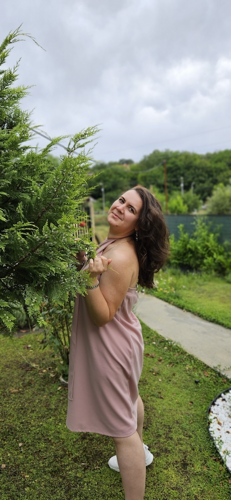

Силвия Симеонова
За добро или лошо, това не е истински сайт на магазин за цветя. Направих го като курсова работа по предмета "Уеб дизайн" в Технически университет - Варна, курс за учител по "Информатика и информационни технологии". И съвсем случайно инициалите ми съвпадат с първите букви от името на магазина ;)
Кода на сайта можете намерите в GitHub